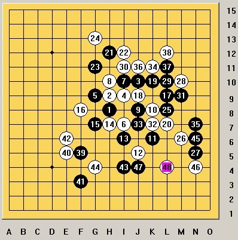

VCF(疏星）
首页
茗弈阁
#1 VCF(疏星） 作者：茗弈求学 发表时间：2010-10-20 12:38:57

以下为实战的一盘 到48手 黑有VCF 目算
转自高飞空间
#2 Re:VCF(疏星） 作者：与郎共五 发表时间：2010-10-20 17:06:58
10冲J3或L3四三 ［ 茗弈求学 于 2010-10-21 10:19:49 时花20金币送鲜花一朵］
#3 Re:VCF(疏星） 作者：岑小鱼 发表时间：2010-10-20 18:49:41
后面应该是L5反四活四 ［ 茗弈求学 于 2010-10-21 10:20:00 时花20金币送鲜花一朵］
#4 Re:VCF(疏星） 作者：行云流水 发表时间：2010-10-21 9:27:45
很古老的题目了。论坛早已有人发过了。 ［ 茗弈求学 于 2010-10-21 10:20:11 时花20金币送鲜花一朵］